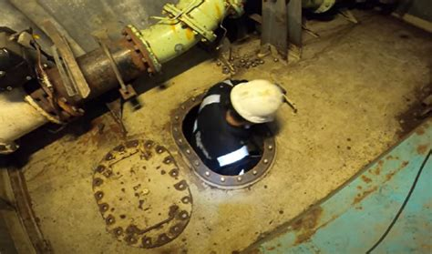
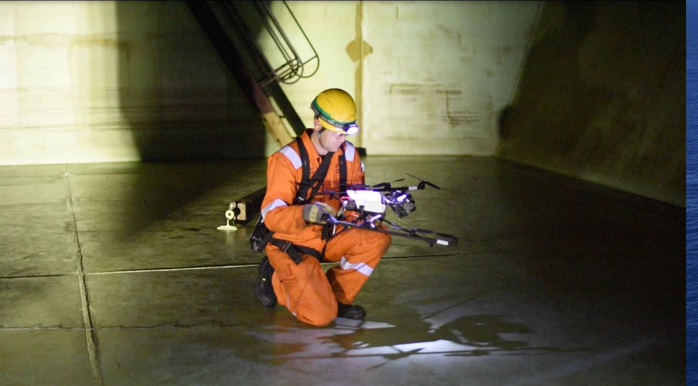
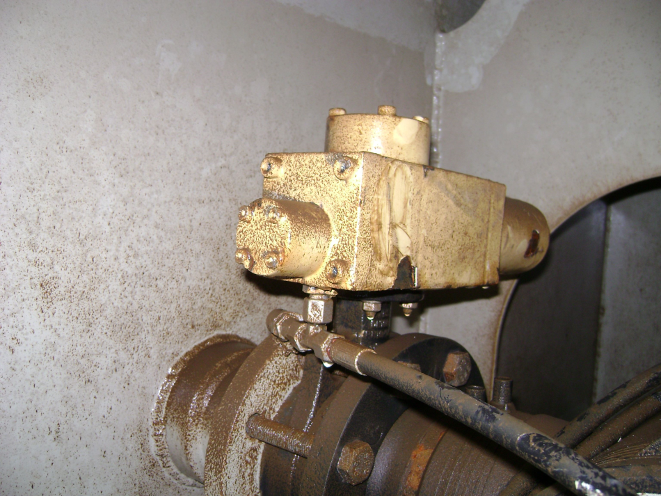
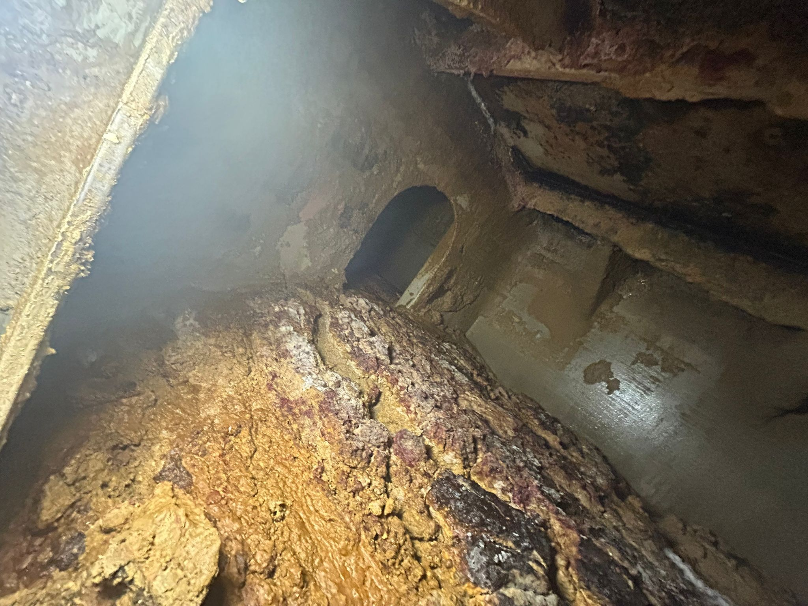
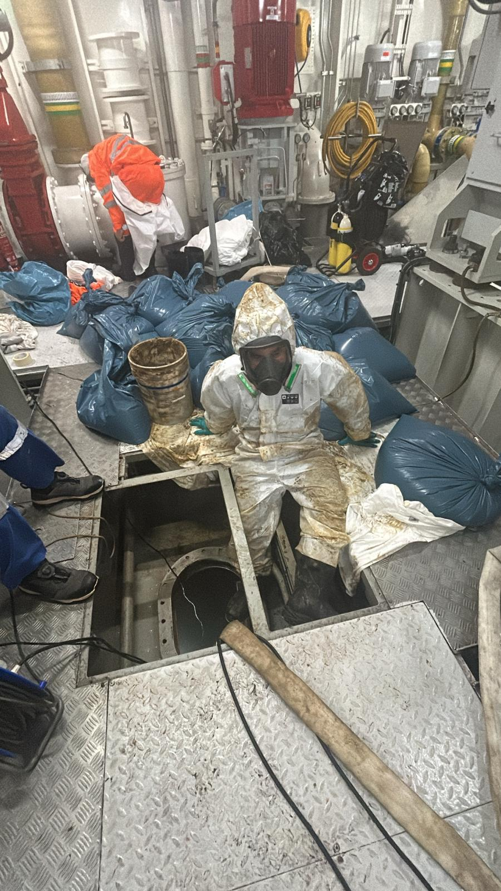
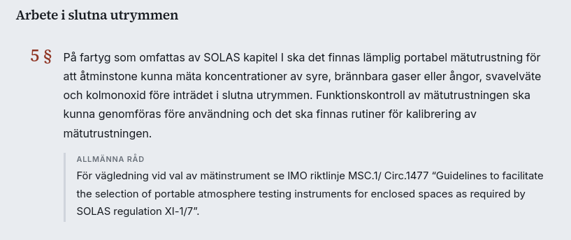
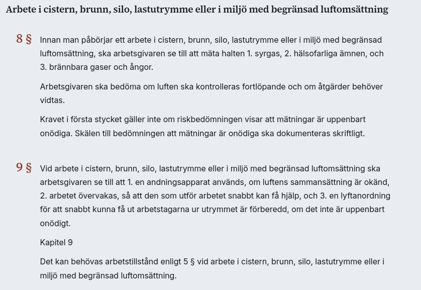
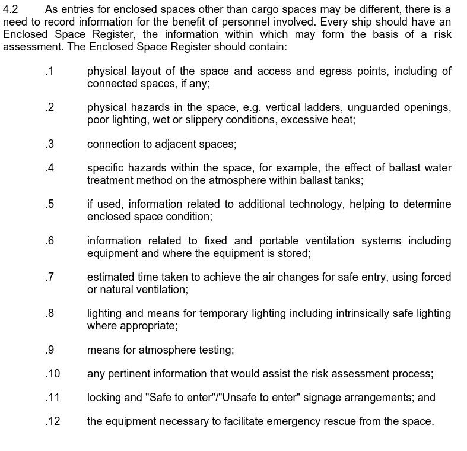
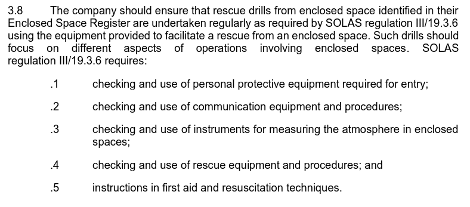
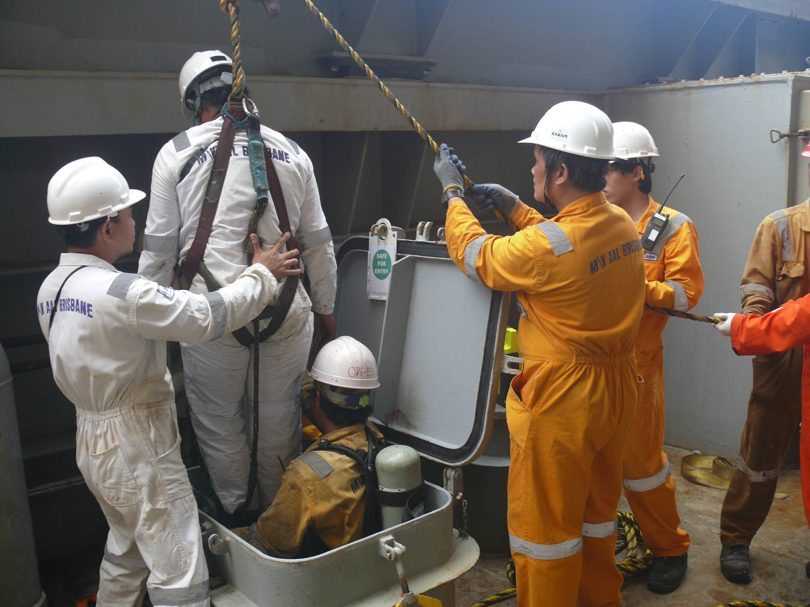

Lektion 8: Slutna utrymmen
Slutna utrymmen
Enclosed Spaces
Confined Spaces
Slutna utrymmen

- Begränsade öppningar
- Otillräcklig ventilation
- Ej avsedda för normalt arbete
Gruppuppgift
Lista så många utrymmen som möjligt ombord ett fartyg som skulle kunna falla inom kriteriet för “slutet utrymme”.
Exempel
- Ballasttankar
- Kättingboxar
- Kofferdammar
- Lastrum
- Void spaces
- Bränsletankar
- etc….
Farorna
- Syrefattig miljö
- Farliga gaser; explosiva, giftiga
- Fallrisk
- Vätskor
Dolda faror
- Last som binder eller förbrukar syre
- Rost
- Tunga gaser
- Propan (2.02)
- H2S (1,36)
- Nitrogen (1,25)
- Sediment
Varför?
Inspektion

Underhåll / Reperationer

Rengöring


Förankring i författning - TSFS 2019:56

AFS 2023:10 Kap. 9

AFS 2023:10 Kap. 9 - sammanfattningsvis
- Riskbedöming
- Gasmätning
- Övervakning
- Räddning ska vara förberett
- Explosiv atmosfär - skriftligt tillstånd
Riktlinjer
- MSC.581(110): Recommendations for entering enclosed spaces aboard ships
- ISGOTT
Skyddsåtgärder

Skyddsåtgärder
- Måste vi gå in i tanken?
- Riskbedömning
- Utrymmet är tömt och ventilerat
- Ventilation
- Isolering
- Gasmätning
Skyddsåtgärder
- Belysning
- Skyddsutrustning
- EEBD, gasdetektor, sele
- Säker access
- Räddningslag, räddningsplan, räddningsutrustning
- Vakt på plats och utbildad
- Hur skyddar vi från obehörigt tillträde
Permit to Work System
MSC.581(110)

~450
~190
Confined Space Fatality - Sharp Lady
What happened?
The incident occurred after discharging crude oil. Equipment was lost at the bottom of a tank. It was decided that once the discharge was finished and crude oil washing completed, the equipment should be retrieved before loading the next cargo into this tank, to avoid any potential damage to the ship’s equipment.
The Chief Officer and Cadet entered the cargo tank after an enclosed space work permit and risk assessment had been completed. When the Chief Officer and Cadet reached the bottom of the cargo tank they felt debilitating effects of hydrocarbon vapour present at the lower level of the cargo tank. Both the Chief Officer and Cadet attempted to activate their Emergency Escape Breathing Devices (EEBD) and exit the cargo tank. The Master observed the Cadet in difficulty and quickly entered the tank, ignoring the advice of a fellow crew member. The Chief Officer successfully exited the cargo tank but the Cadet had collapsed unconscious on the tank bottom. When the Master reached the tank bottom to aid the Cadet he was overcome by hydrocarbon vapour and collapsed.
The alarm was raised and a rescue was quickly initiated. The Master and Cadet were retrieved from the bottom of the cargo tank and brought to the main deck where first aid was administered. The report concludes that the Master died and the Cadet was injured as a result of entering the cargo tank containing a concentration of hydrocarbon vapour at the bottom of the cargo tank.
~450
Två decennium
- Utbildning
- Regler och guidelines; bland annat krav på övningar
- Riktade kampanjer från IACS, flaggstater, IMO, P&I, ILO, fackförbund
- Återkommande Port State CIC
- Det fanns ett system
- Checklistor etc var gjorda
- Riskbedömning var gjord
Övningar

Övningar
- Baseras på riskbedömning
- Vilka tankar har vi?
- Risker i tankar?
- Möjlighet till räddning?
Övningar

Toolbox talk - möjlighet till övning
- Gå igenom räddningsplan
- Kolla utrustning
- Instruera i handhavande
- Testa kommunikation
Till nästa gång…
- Inlämningsuppgift 3 öppnas
- Läs igenom haverirapporten om Eken